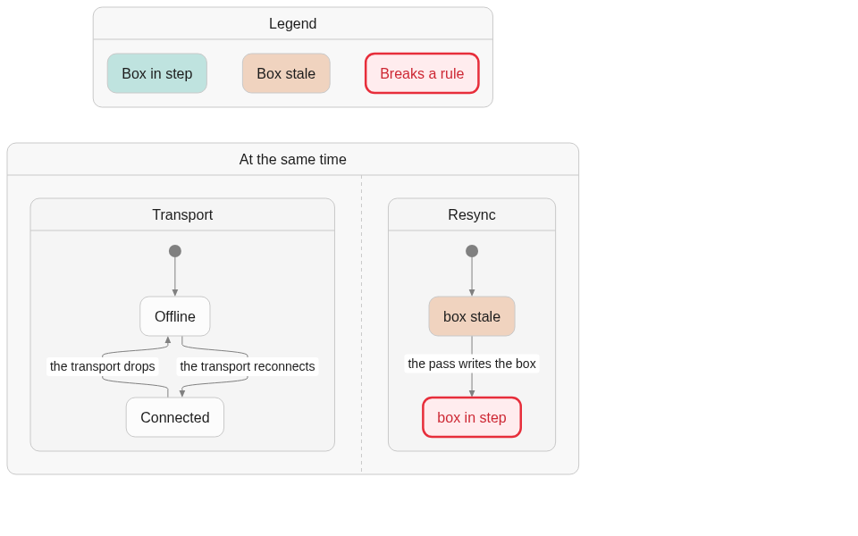
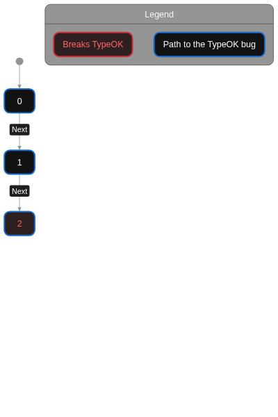

Magpie statechart 样式一致性验证
同一份 Mermaid 在有无安装 statechart 的两个 Magpie 环境中生成了逐字节一致的 SVG。两张状态图与 pstack 0.9.155 基准的 16 组截图对比均为零像素差异。
截图对比
分组配色HTML 内联 · 960 px · 浅色
Phases.mmd


反例标记独立 SVG · 400 px · 深色
TypeGuard/chart.mmd


全部对比
| 图 | 载体 | 视口与主题 | 差异像素 | 原尺寸截图 |
|---|---|---|---|---|
| 分组配色 | HTML 内联 | 960 px · 浅色 | 0 | pstack Magpie |
| 分组配色 | HTML 内联 | 960 px · 深色 | 0 | pstack Magpie |
| 分组配色 | HTML 内联 | 400 px · 浅色 | 0 | pstack Magpie |
| 分组配色 | HTML 内联 | 400 px · 深色 | 0 | pstack Magpie |
| 分组配色 | 独立 SVG | 960 px · 浅色 | 0 | pstack Magpie |
| 分组配色 | 独立 SVG | 960 px · 深色 | 0 | pstack Magpie |
| 分组配色 | 独立 SVG | 400 px · 浅色 | 0 | pstack Magpie |
| 分组配色 | 独立 SVG | 400 px · 深色 | 0 | pstack Magpie |
| 反例标记 | HTML 内联 | 960 px · 浅色 | 0 | pstack Magpie |
| 反例标记 | HTML 内联 | 960 px · 深色 | 0 | pstack Magpie |
| 反例标记 | HTML 内联 | 400 px · 浅色 | 0 | pstack Magpie |
| 反例标记 | HTML 内联 | 400 px · 深色 | 0 | pstack Magpie |
| 反例标记 | 独立 SVG | 960 px · 浅色 | 0 | pstack Magpie |
| 反例标记 | 独立 SVG | 960 px · 深色 | 0 | pstack Magpie |
| 反例标记 | 独立 SVG | 400 px · 浅色 | 0 | pstack Magpie |
| 反例标记 | 独立 SVG | 400 px · 深色 | 0 | pstack Magpie |


验证方法
基准使用 pstack 0.9.155 的 skills/statechart/references/render.md。用该文档的参数及样式调 Pele 1.9.0 渲染原版 Phases.mmd 和 TypeGuard/chart.mmd。
用 Chrome 149 在 960 px 和 400 px 的视口分别渲染浅色与深色主题，逐像素比较独立 SVG 和 HTML 内联截图。
把 diagram-render 安装到两个独立环境，只在其中一个环境安装 pstack statechart。用相同的 Mermaid、Pele 版本和输出文件名离线渲染，逐字节比较 Magpie 的 SVG 文件。
commit_check.sh 通过。像素一致性针对相同浏览器和视口。Magpie 的 SVG 还携带无障碍标签、作用域和许可证元数据。